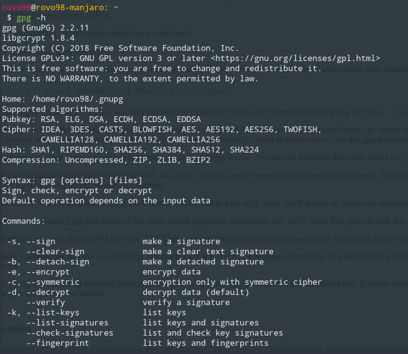
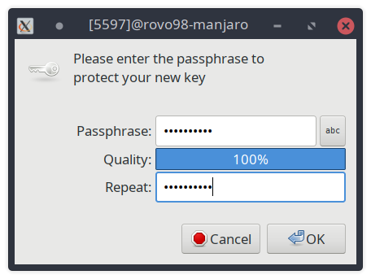
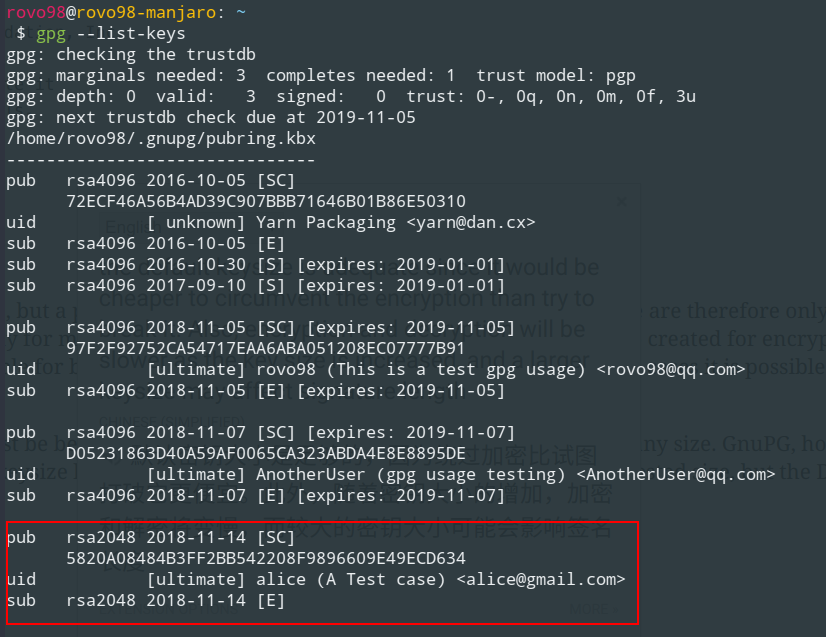
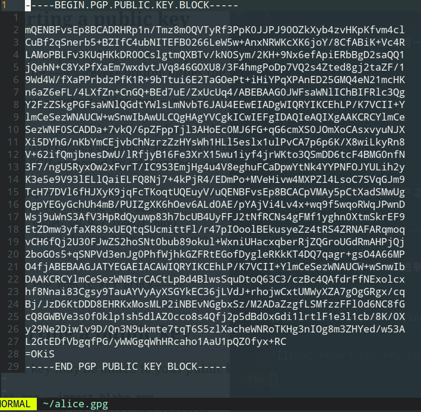
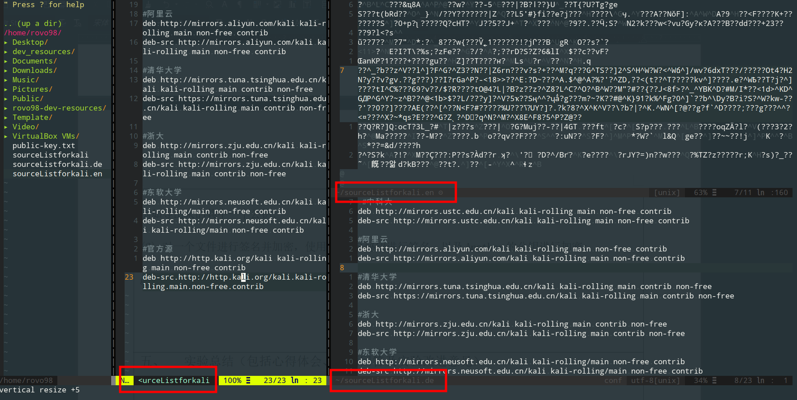

引入
gpg is the OpenPGP part of the GNU Privacy Guard (GnuPG). It is a tool to provide digital encryption and signing services using the OpenPGP standard.
gpg features: complete key management and all the bells and whistles you would expect from a full OpenPGP implementation.
GnuPG(GPG) 是 基于OpenPGP(由RFC4880定义,也被称为PGP)的一个完整的和免费的实现.我们可以使用GPG来对我们的数据和通信进行加密(encrypt)和签名(sign), 它具有通用的密钥管理系统，以及各种公钥目录的访问模块. 我们可以很容易地使用GPG提供的命令行工具(当前它还提供不同平台下的图形界面工具frontends,以及库文件libraries)与其他的应用进行结合.同时还对S/MIME和SSH(Security Shell)提供支持.
本文使用环境为Linux命令行，掌握命令行，Window(Gpg4win)等其他客户端也很容易掌握。
安装
GPG有两种安装方式。可以下载源码, 自己编译安装:
1 | ./configure |
更方便的方式是直接安装编译好的二进制包:
1 | # Arch 环境 |
安装完成后，键入下面的命令:
1 | gpg --help |
如果屏幕显示GPG的帮助信息，就表示安装成功。

密钥管理
在使用GPG进行加密和签名之前，我们应该清楚的知道，它还是一个优秀的密钥管理工具(key Manager).
可以使用gpg --list-keys查看当前管理的所有密钥.
生成密钥对
使用gpg --gen-key或gpg --full-gen-key(设置完整的参数配置来生成密钥对)
以完整的生成密钥对为例,gpg --full-gen-key
(1).选择加密的算法(默认RSA):
1 | gpg (GnuPG) 2.2.11; Copyright (C) 2018 Free Software Foundation, Inc. |
(2).选择密钥的大小(默认2048位):
密钥的位数越大，对于防范暴力破解攻击就越安全,但是对于各种用途，使用默认的大小已经足够了，因为绕过加密比试图破解代价反而更少一些。此外，随着密钥大小的增加，加密和解密将变慢，较大的密钥位数可能会影响签名的长度。
1 | RSA keys may be between 1024 and 4096 bits long. |
(3). 配置密钥的失效时间(默认0, 永不失效)
1 | Please specify how long the key should be valid. |
(4). 配置用户信息
1 | GnuPG needs to construct a user ID to identify your key. |
(5). 最后输入加密密码，完成密钥对的生成

查看当前的所有密钥对:

密钥的导出和导入
导入公钥/私钥:
公钥和私钥的导入都是使用一样的命令gpg --import
1 | #导入公钥 |
导入公钥之后，应进行验证。GnuPG提供了功能强大的信任模型，不需要我们亲自验证导入的每一个公钥。但是一些公钥还是需要亲自进行验证的，下面简单了解一下如何对导入的公钥进行验证。
通过验证公钥的指纹，然后签名(Sign)公钥以将其证明为有效公钥来验证密钥。可以使用--fingerprint命令行选项快速查看公钥的指纹，但为了验证公钥，必须对其进行编辑。
编辑公钥示例:
1 | gpg --edit-key blake@cyb.org |
公钥的指纹验证需要通过公钥的所有者进行验证。可以通过电话或任何其他方式亲自完成，只要能够和公钥的真正所有者进行联系就行。
如果获得指纹与公钥所有者的指纹相同，才可以确定我们得到是正确的公钥副本
检查指纹之后，最后进行公钥的签名(Sign)完成验证。由于公钥签名是公钥加密中的一个弱点，因此在进行签名验证之前，必须确保指纹验证是正确的。
1 | Command>> sign |
签名之后，可以检查公钥，以列出其上面的签名，并查看我们添加的签名。公钥上的每个用户ID都可以具有一个或多个自签名以及已经通过公钥验证的签名。
1 | Command> check |
导出公钥(Public key)
要将公钥发送给对应的用户之前，我们需要将密钥对的公钥导出，在GPG中使用gpg --export命令导出
1 | gpg --output alice.gpg --export alice@gmail.com |
默认导出的文件是以二进制格式保存的，非常不方便进行传输，因此GPG还提供了--armor参数来指定以ASCII码形式导出。
1 | gpg --armor --output alice.gpg --export alice@gmail.com |

导出私钥(Private key):
GPG还支持导出私钥，不过是对所有的私钥进行导出，同样可以二进制格式或ASCII格式导出.
1 | gpg --export-secret-keys --armor |
上传公钥
公钥服务器是网络上专门储存用户公钥的服务器。send-keys参数可以将公钥上传到服务器。
1 | gpg --send-keys [用户ID] --keyserver [服务器域名] |
使用上面的命令，你的公钥就被传到了服务器，然后通过交换机制，所有的公钥服务器最终都会包含你的公钥。
由于公钥服务器没有检查机制，任何人都可以用你的名义上传公钥，所以没有办法保证服务器上的公钥的可靠性。通常，你可以在网站上公布一个公钥指纹，让其他人核对下载到的公钥是否为真。fingerprint参数生成公钥指纹。
1 | gpg --fingerprint [用户ID] |
从公钥服务器上获取公钥:
1 | gpg --receive-keys |
获取到的公钥需要进行验证,参考上面提到的导入公钥的验证方式。
加密和解密文件
在加密和解密文件时，公钥和私钥各自具有特定的作用。
公钥可以被认为是开放式保险箱。当通过公钥加密文件时，该文件被放入保险箱，安全关闭，并且组合锁经过多次旋转和组合。
相对应的私钥是可以重新打开保险箱并检索文件的组合(组合锁组合)。换句话说，之后持有私钥的人才能恢复和使用相关公钥加密文件。
因此加解密过程应该是这样的，假设你要给alice发送加密信息，使用alice的公钥对信息进行加密，则alice可以使用她的私钥对加密信息进行解密，而当她向你发送加密信息，加密信息时使用的应该是你的公钥。
加密例子: 使用alice的公钥对sourceListforKali进行加密
1 | gpg --output sourceListforKali.en --encrypt sourceListforKali --recipient alice@gmail.com |
--recipient指定使用的公钥
解密:
1 | gpg --output sourceListforKali.de --decrypt sourceListforKali.en |
输入之前创建该密钥对的密码就可以对文件进行解密。

我们还可以在不使用公钥的情况下，对文件进行加密，使用的是对称密码(symmetric chiper).使用--symmetric参数即可
手动输入加密密码即可。
1 | gpg --output sourceListforKali.gpg --symmetric sourceListforKali |
签名(signatures)
数字签名证明文档并为其加上时间戳。如果随后以任何方式修改了文档，则签名验证将失败。数字签名可以起到与手写签名相同的作用，并具有防篡改的额外好处。
例如：当你将文件签名并发布后，则接受到该文件的用户可以验证签名来查看文件是否被修改过。
创建和验证签名
创建和验证签名使用公/私钥对的方式不同于加解密操作。使用签名者的私钥创建签名，使用相应的公钥验证签名。
使用数字签名的好处是一般情况下，签名人是确定的，除非签名者的私钥被泄露了。
使用--sign参数创建数字签名，例:
1 | gpg --output doc.sig --sign doc |
签名的文件在签名之前会被进行压缩处理，并输出一个二进制格式的签名文件。根据给定的签名文件，可以检查签名或检查签名并恢复原始文件。
检查和验证签名使用--verify参数选项,验证签名并恢复原始文件使用--decrypt选项:
1 | gpg --output doc --decrypt doc.sig |
一般情况下，数字签名多数应用于对互联网上的帖子post以及email进行签名。这种情况下，我们一般不希望对需要签名的文件进行压缩处理，因此可以使用--clearsign选项，在不修改文件的情况下，将文件以ASCII的形式包装在签名文件中。
1 | gpg --clearsign doc |
分离的、独立的签名文件(Detached signatures): 一个签名过的文件的用途一般是很少的。
其他用户必须从签名文件中恢复原始文档，即使使用未压缩处理的签名文件(Clearsigned)，也必须编辑签名文档以恢复原始文档。
因此，GPG还提供用于对文档创建分离签名第三种签名方法，该签名是单独的文件。使用--detach-sig选项创建分离签名。
1 | gpg --output doc.sig --detach-sig doc |
通过此方法创建的签名，在验证时就需要同时使用签名和对应原文件:
1 | gpg --verify doc.sig doc |
更多
以上就是GnuPG的简单入门使用，更多的可以详细阅读GnuPG提供的用户手册和文档.
例如: 我们可以在加密文件的同时对文件进行签名(使用三种签名方法的其中一种)